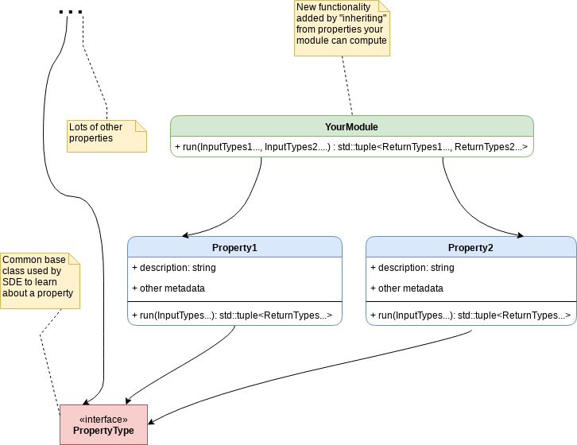

Overview¶
The simulation development environment, or SDE, is a software framework that was designed to make it as easy as possible for an end-user to fine-tune every aspect of a scientific simulation, in particular:
change the algorithm used to compute a result,
construct non-conventional workflows (e.g., use a non-conventional quantity as an input for another algorithm),
change algorithmic parameters on-the-fly
At the same time the SDE also strives to allow developers to easily extend the software. In particular this includes:
introduce a new algorithm
have new algorithms be available wherever relevant
leverage external libraries and algorithms
Furthermore, all of the above needs to be implemented in a manner which is amenable to high-performance computing. Ideally the resulting framework will run on multiple current architectures and will be designed in such a way that porting it to new architectures does not require a complete rewrite. This is a tall order.
The SDE’s solution to these design points is to rely heavily on encapsulation
and standardization. On the encapsulation front, new algorithms are added by
writing self-contained, functor-like objects called “modules”. Each module must
define a run member, which is used by the SDE to opaquely execute the code
inside the module. The overall program is then created by stitching modules
together into a call tree. As defined so far, the resulting program is likely
to experience strong inter-module coupling. This is because the API of a
given module is going to be unique to that module. Hence if the results of
module A sometimes go to module B and other times go to module C, there needs
to be dispatch code to: choose which module to call, prepare the appropriate
input, and to process the results of the call.
This is where standardization comes in. When a module is called, it is called because it is capable of computing a result of interest. Within a typical domain, there is a limited number of “interesting” results and a plethora of means to compute them. In the language of the SDE we term these interesting results “properties” and require standardized APIs for each one. The classes that implement these APIs are called “property types”. Generally speaking a module will compute one, or at most a few, properties. The SDE then requires that the final API of the module be a superset of the APIs of each property type that it satisfies. This is admittedly one of the more technical points of the SDE and is summarized (xxx add link), but for now you can think of it as occurring through multiple inheritance (i.e., the module inherits from each of the property types it satisfies). Consequentially, the final call graph is then assembled by double dispatch at each function call: one dispatch to determine the module to use, and one dispatch to determine which property type to run the module as.
The basic ideas covered here are summarized by the following UML diagram:
